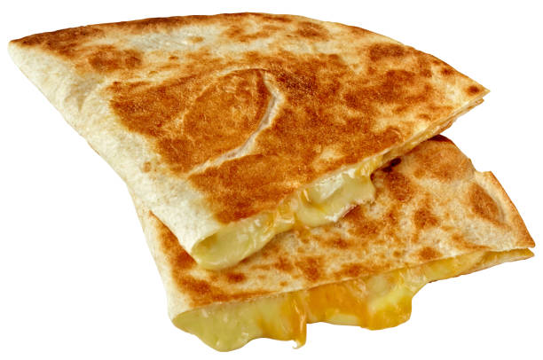

Home
Quesadillas

Descripcion
Tortillas doraditas rellenas de queso derretido, una opción sencilla y deliciosa para cualquier momento del día.
Ingredientes
- 8 tortillas de maíz o harina
- 250 g de queso (queso Oaxaca, manchego o queso fresco)
- Aceite o mantequilla (opcional)
Preparacion
- Coloca una tortilla en un comal o sartén caliente.
- Añade una porción de queso en una mitad de la tortilla.
- Dobla la tortilla por la mitad y cocina a fuego medio hasta que el queso se derrita y la tortilla esté ligeramente dorada (2-3 minutos por lado).
- Repite el proceso con las demás tortillas.